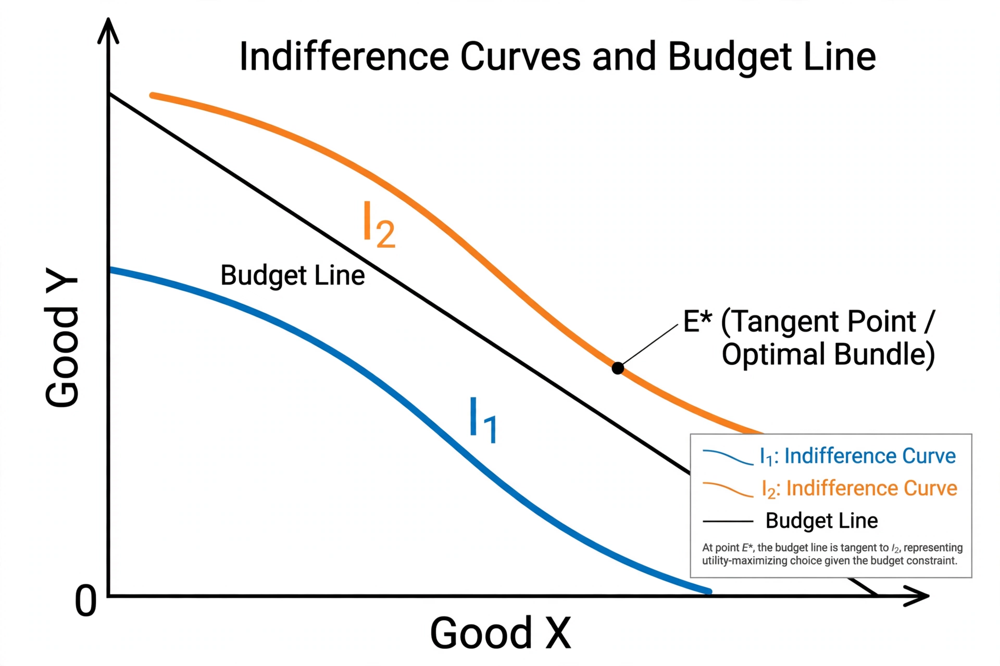

Marginal rate of substitution
In economics, the marginal rate of substitution (MRS) is the rate at which a consumer can give up some amount of one good in exchange for another good while maintaining the same level of utility. At consumption levels, marginal rates of substitution are identical to the slope of indifference curves.

If the marginal rate of substitution of good X for good Y (MRSxy) is:
- diminishing, the indifference curve will be convex (as in most preferences),
- constant, the indifference curve will be a straight line with a slope of −1 (the goods are perfect substitutes),
- increasing, the indifference curve will be concave.
Definition
The marginal rate of substitution of X for Y is defined as the amount of Y a consumer is willing to give up to obtain one additional unit of X, holding utility constant:
MRSxy = −(dY/dX)|U=constant = MUx / MUy
where MUx and MUy are the marginal utilities of goods X and Y respectively. In words, it is the ratio of the marginal utility of the good gained to the marginal utility of the good given up.
Consumer optimum
Under the standard assumption of convex, well-behaved preferences, a utility-maximizing consumer facing prices Px and Py chooses a bundle where the marginal rate of substitution equals the price ratio:
MRSxy = Px / Py
At this tangency point on the budget constraint, the consumer cannot increase utility by trading one good for the other. If the goods are perfect substitutes, the solution may instead be a corner solution in which only one good is consumed.
Marginal rate of technical substitution
The analogous concept in production theory is the marginal rate of technical substitution (MRTS), the rate at which one input (such as labour) must be decreased when another input (such as capital) is increased by one unit, so that output remains constant. It equals the ratio of the marginal products of the inputs.
See also
References
Mas-Colell, A., Whinston, M. D., & Green, J. R. (1995). Microeconomic Theory. Oxford University Press.
Varian, H. R. (2014). Intermediate Microeconomics: A Modern Approach (9th ed.). W. W. Norton.